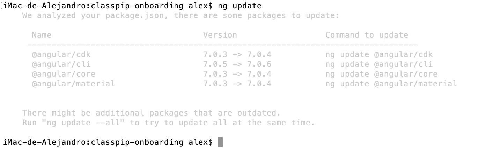
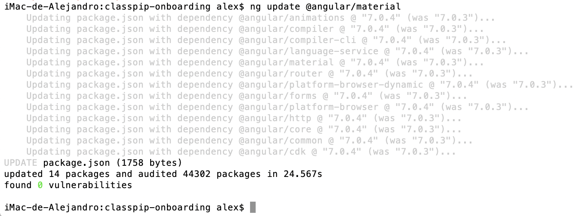
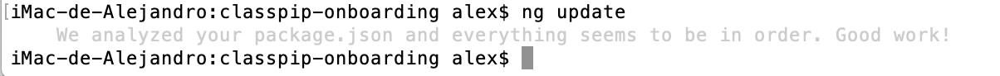
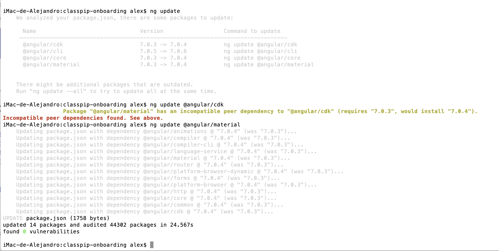

Para añadir una página a la web de onboarding, primero habrá que crear el nuevo componente que alojará el texto, las imagenes y el resto de componentes de esa página. En este ejemplo se creará una nueva página de privacidad. Para crear un nuevo componente hay que usar el temrinal. Primero hay que ir a la carpeta del proyecto, y luego hay que usar el siguiente comando:
ng generate component shared/privacy
Este comando, ha generado la carpeta privacy dentro de app/shared, y a su vez dentro de la carpeta privacy se generan 4 archivos:
Grácias a este comando, también se ha agregado el componente en app.module.ts, tanto la importación como la declaración.
Lo siguiente es generar la ruta para esta nueva página, para ello hay que ir al archivo 'app.routing.ts', importar el componente que se ha generado y añadirle la ruta.
{{"import { PrivacyComponent } from './shared/privacy/privacy.component';
import { NotfoundComponent } from './pages/notfound/notfound.component';
const routes: Routes = [
{ path: 'terms/privacy', component: PrivacyComponent },
{ path: '404', component: NotfoundComponent },
{ path: '**', redirectTo: '/404' }
];"}}
En este ejemplo se aprecia que se añade PrivacyComponent junto a la ruta de NotfoundComponent y una ruta por defecto que lleva cualquier ruta que no este declarada al componente de notfound. De esta manera queda claro como agregar rutas nuevas a las ya existentes.
Una vez que ya se tiene el componente y la ruta ya se pueden crear enlaces hacia esa ruta, o incluso escribirla directamente en el navegador. Ahora ya solo queda escribir el contenido en el archivo privacy.component.html.
Para modificar los enlaces del menu sidenav hay que dirigirse al archivo src/app/shared/navigation/links/links.component.html, en ese archivo se encuentra un mat-nav-list que contiene los enlaces del menú.
Existen dos niveles de enlaces, el que se ve directamente en el menú sidenav (primer nivel), y los que se ven cuando se abren estos (segundo nivel). Todos los enlaces deben llevar mat-list-item dentro del html tag a.
A todos los enlaces que llevan a una página nueva hay que ponerles la función setTitle( 'Título de la nueva página' ) cuando se dispare el evento click. Esto se hace para que el título de la pestaña cambie y cada página tenga un título. setTitle es una función de un servicio de angular creada para cambiar el título de las paginas. Que cada página tenga su propio título mejora el seo (Search Engine Optimization) de la web y por lo tanto su posición a la hora de aparecer en búscadores como Google.
A los enlaces de primer nivel, si contienen enlaces de segundo nivel, hay que ponerles la funcion openClose( 'idGrupo', 'idGrupoCaret'), y dentro del contenido del html tag a hay que poner un icono caret de material con un id único que se va a asignar a cada grupo de enlaces y que es el parámetro 'idGrupoCaret' de la función. El otro parámetro de la función es el nombre de una variable booleana que se va a utilizar para mostrar o ocultar los enlaces de segundo nivel de ese grupo. La función devuelve el valor true o false que se asigna a esa misma variable y gira el icono con el id proporcionado en el segundo parámetro.
<a mat-list-item (click)="usersShow = openClose(usersShow, 'userCaret')">
<mat-icon mat-list-icon>people</mat-icon>
<span>Usuarios</span> // titulo enlace
<span class="fill-space"></span> // span vacio para alinear el caret a la derecha
<mat-icon id="userCaret" class="material-icons">expand_more</mat-icon>
</a>
Los enlaces de segundo nivel deben tener un *ngIf="idGrupo", al ser una variable booleana los enlaces se mostrarán u ocultarán según su valor. A estos enlaces de segundo nivel tambien hay que añadirles la función openClose() en el evento click para que se cierre el grupo una vez seleccionado uno de los enlaces.
<a *ngIf="usersShow" class="second-level" mat-list-item routerLink="/user/students" (click)="usersShow = openClose(usersShow, 'userCaret'); setTitle( 'Classpip onboarding aprende a usar la aplicacion como estudiante' );">
<mat-icon mat-list-icon fontSet="fa" fontIcon="fa-user-graduate"></mat-icon> // ver sección iconos
<span>Estudiantes</span> // titulo enlace
</a>
En el ejemplo previo, se observa como esta realizado el enlace de primer nivel 'Usuarios', y un enlace de segundo nivel que pertenece a este llamado 'Estudiantes'.
En este proyecto se pueden usar los material icons de la forma usual, que es <mat-icon>nombreIcono</mat-icon>, usando como 'nombreIcono' cualquiera de los de la lista del enlace.
Pero también se han añadido los iconos gratuitos de font Awesome, que ofrecen una mayor variedad de iconos inexistentes en los material icons, como por ejemplo el del logo de Github. Para poder utilizar los iconos de font awesome dentro de un tag mat-icon, como los de material, se ha instalado un modulo de Node y se ha creado un servicio.
Ahora para añadir un icono de font awesome solo hay que añadir al tag mat-icon un fontSet y un fontIcon. El fontSet depende del tipo de icono que se vaya a utilizar, los normales usan el fontSet fa, los de marcas usan el fab, los del grupo solid usan el fas,etc. En el fontIcon hay que poner el nombre del icono precedido de fa-. Y finalmente, al contrario que con los iconos de material, no hay que poner ningún texto dentro del tag mat-icon.
Si por ejemplo se quiere usar el icono addess-card del grupo Solid hay que hacerlo de la siguiente manera:
<mat-icon mat-list-icon fontSet="fas" fontIcon="fa-address-card"></mat-icon>
Como ejemplo se va a crear el servicio que da estilo al formato de código que hay en las páginas de desarrollo de la web de onboarding. Para ello se va a usar el modulo de prismjs. El primer paso es, desde terminal nos situamos en la carpeta del proyecto, y para instalar el módulo de pismjs se utiliza el siguiente comando:
$ npm install prismjs --save
Ahora toca crear el nuevo servicio. Para generarlo, hay que escribir el siguiente comando del cli de angular:
$ ng generate service shared/services/highlight
El servicio que se ha generado, podemos encontrarlo en la ruta app/shared/services/highlight.service.ts, y por el momento sólo tiene código genérico. El archivo debe ser algo como esto:
{{"import { Injectable } from '@angular/core';
@Injectable({
providedIn: 'root'
})
export class HighlightService {
constructor() { }
}"}}
Se procede a escribir el código del servicio. En este caso, se escribe código para poder utilizar prismjs y que de formato de código, con colores para facilitar la lectura a los fragmentos de código que hay en la web de onboarding. Una vez escrito el código, el archivo de highlight.services.ts quedará así:
{{"import { , PLATFORM_ID, Inject } from '@angular/core';
import 'clipboard';
import 'prismjs';
import 'prismjs/plugins/toolbar/prism-toolbar';
import 'prismjs/plugins/copy-to-clipboard/prism-copy-to-clipboard';
import 'prismjs/components/prism-javascript';
import 'prismjs/components/prism-markup';
import 'prismjs/components/prism-typescript';
import 'prismjs/components/prism-sass';
import 'prismjs/components/prism-scss';
declare var Prism: any;
@Injectable({
providedIn: 'root'
})
export class HighlightService {
constructor(@Inject(PLATFORM_ID) private platformId: Object) { }
highlightAll() {
if (isPlatformBrowser(this.platformId)) {
Prism.highlightAll();
}
}
}"}}
Una vez que se ha programado el servicio que se necesita, hay que utilizarlo en el componente donde se quiere insertar código formatado. Como ejemplo, se va a insertar el servicio de formatado de código en el componente de onboarding. En este caso concreto, además se va a utilizar AfterViewChecked que es un evento que se lanza cuando la vista ya se ha cargado completamente, y es cuando se iniciará el método de highlightAll(). También se ha añadido la variable booleana highlighted que se utiliza para evitar que el método highlighted se llame más de una vez.
Por lo tanto, tras importar AfterViewChecked de Angular/core y el servicio HighlightService, hay que añadir private highlightService: HighlightService al constructor, y por último la función que se lanza en ngAfterViewChecked. Una vez hecho esto el código debe ser así:
{{"import { Component, OnInit, AfterViewChecked } from '@angular/core';
import { HighlightService } from '../../shared/services/highlight.service';
@Component({
selector: 'app-onboarding',
templateUrl: './onboarding.component.html',
styleUrls: ['./onboarding.component.scss']
})
export class OnboardingComponent implements OnInit, AfterViewChecked {
onboarding: OnboardingInterface;
highlighted: boolean = false;
constructor(private highlightService: HighlightService) { }
/**
* Highlight blog post when it's ready
*/
ngAfterViewChecked() {
if (this.onboarding && !this.highlighted) {
this.highlightService.highlightAll();
this.highlighted = true;
}
}
ngOnInit() {
}
}"}}
Y en este caso, para acabar aún queda un último paso. Hay que importar las hojas de estilos de prismjs en src/sass/styles.scss. Que en el caso de este proyecto son las que pertenecen al tema coi. Y, de ser necesario después se puede añadir alguna personalización al código para que se adapte al estilo de la web. La importación y personalización de estilos es la siguiente:
{{'@import "~prismjs/plugins/toolbar/prism-toolbar.css";
@import "~prismjs/themes/prism-coy";
pre[class*="language-"] {
background-color: transparent;
}
pre[class*="language-"]:before, pre[class*="language-"]:after {
display: none;
}'}}
El servicio ya esta añadido y funcionando. Ya se ha explicado como crear un nuevo servicio y como usarlo en los componentes. Ahora, como apunte, hay que señalar que para usar el formatado de texto del servicio de highlight, tan solo hay que añadir la clase class="language-'lenguaje-usado'" al tag code, por ejemplo para código en javascript hay que añadir class="language-typescript" al tag code.
Las páginas del proyecto de onboarding estan hechas con contenido estático, a excepción de la página con el tutorial de uso para profesores que tiene un archivo con el contenido que se llama y se lista desde el componente correspondiente a la página de profesores.
Para este contenido se ha creado un objeto dataCard en app/class/dataCard.ts que se utiliza en el archivo app/data/teacher_videos.ts, donde se ha escrito un array de objetos dataCard.
Lo último que queda es importar el objeto dataCard y el array de objetos dataCard en el componente app/pages/teachers/teachers.component.ts y igualar el array a una variable que se pueda usar en la plantilla y utilizar para listar su contenido.
Hay que mencionar, que para que se puedan listar enlaces a webs provenientes de objetos, como lo son los enlaces de youtube, hay que "sanear" el contenido ya que si no se hace este queda bloqueado por seguridad. Para ello hay que importar DomSanitizer de angular/platform-browser e introducirlo en el constructor. Ahora que ya se pueden utilizar los métodos de sanitizer, alla donde se vaya a imprimir el contenido url hay que poner lo siguiente: [src]='sanitizer.bypassSecurityTrustResourceUrl(url)'.
El código del componente de teachers.component.ts es el siguiente:
{{"import { Component, OnInit } from '@angular/core';
import { DomSanitizer } from '@angular/platform-browser';
import {CdkDragDrop, moveItemInArray} from '@angular/cdk/drag-drop';
import { DataCard } from '../../class/dataCard';
import { CARDS } from '../../data/teacher_videos';
@Component({
selector: 'app-teachers',
templateUrl: './teachers.component.html',
styleUrls: ['./teachers.component.scss']
})
export class TeachersComponent implements OnInit {
cards = CARDS;
constructor(public sanitizer: DomSanitizer) {}
ngOnInit() {}
drop(event: CdkDragDrop<DataCard[]>) {
moveItemInArray(this.cards, event.previousIndex, event.currentIndex);
}
}"}}
Para facilitar la lectura de código en los tutoriales de la web de onboarding se ha utilizado el módulo de Node prismjs, y como se ha visto en un punto anterior de este tutorial se ha creado un servicio para su uso.
Para utilizar el formatado de código en un componente se hace de la siguiente manera:
{{"ngAfterViewChecked() {
if (this.onboarding && !this.highlighted) {
this.highlightService.highlightAll();
this.highlighted = true;
}
}"}}
En este caso, se puede seguir de ejemplo el código que hay en el anterior apartado. Donde se implementa el servicio de highlightService en el componente de teachers.component.ts
En el caso de utilizar tabs, estos utilizan lazy loading, lo que significa que van cargando contenido cuando se abre el correspondiente tab, no antes. El servicio de hightlightService esta implementado de forma que solo carga una vez cuando carga la página. De esta manera, cuando acaba de cargar la página se da formato al código, pero al cambiar el tab, carga el nuevo contenido y no se lanza la función de formatado, por lo que se ve el texto sin formato. Para solucionar esto, hay que utilizar el evento selectedTabChange para lanzar la función tabSelectionChanged($event) en el tag mat-tab-group.
<mat-tab-group (selectedTabChange)="tabSelectionChanged($event)">
La función tabSelectionChanged(event) lo que hace es volver a lanzar el servicio de highlightService para el nuevo contenido. La función es la siguiente:
{{"tabSelectionChanged(event) {
this.highlightService.highlightAll();
}"}}
Una vez que esta todo listo para formatar el código, solo falta añadirlo en la plantilla html del componente. Para ello se utilizan los tags code y pre.
En el tag pre se puede seleccionar si mostrar o no las lineas en el código. Para mostrar las lineas hay que añadir la clase line-numbers al tag pre, en el caso de ponerlas lineas del código se puede elegir en que número comenzar. Si no se pone nada, comienza por la linea numero 1, pero si se quiere comenzar por alguna linea en concreto hay que poner un data-start con el número de linea por el que se quiere comenzar. Si, por ejemplo, se quieren poner números y comenzar por la linea 17, el tag pre quedará de la siguiente manera <pre class="line-numbers" data-start="17">.
Lo único que queda es indicar que tipo de código se va a mostrar para que le haga un formatado correcto. Para ello hay que añadir una clase al tag code, la clase es language-'tipo-lenguaje', por lo que si se va a mostrar lenguaje typescript hay que añadir class="language-typescript".
Ahora mismo, los lenguajes que se pueden formatar son los importados en el archivo highlight.services.ts, y son:
Aunque se pueden añadir cualquiera de los lenguajes disponibles en la página de prismjs. Solo se han añadido esos lenguajes ya que, de momento, son los únicos utilizados en el proyecto.
Importante: Angular compila el código que hay dentro de los pre-code, y nomalmente da error al introducir código y compilar. La forma de solucionarlo es la siguiente:
Desde angular 6 se ha introducido una forma de actualizar la aplicación y sus dependencias muy fácil y sencilla. Este proyecto se inició con Angular 6, y posteriormente se ha actualizado en diversas ocasiones hasta la versión 7 de Angular. Para actualizar basta con introducir el siguiente comando en el terminal:
ng update
Introduciendo este comando, se obtiene un listado de las actualizaciones disponibles, si las hay, de la siguiente manera: 
El paso siguiente es introducir los comando ng update que nos ofrece el mismo listado de actualizaciones uno a uno hasta haberlos introducido todos. El resultado es el que se ve en la siguiente imagen:

Una vez realizadas todas las actualizaciones, o si se ejecuta el comando ng update sin haber actualizaciones disponibles, el resultado de este comando es el siguiente:

Importante: en ocasiones el resultado de la actualización es un mensaje de error que avisa de que se han encontrado depdendencias incompatibles.
En la siguiente imagen se puede apreciar como al intentar actualizar @angular/cdk de la versión 7.0.3 a la versión 7.0.4, aparece un mensaje de error informando de que @angular/material en su versión 7.0.3 requiere la versión 7.0.3 de @angular/cli. La solución a este problema es tan sencilla como realizar el comando de actualización primero a @angular/material, y luego a las demás dependencias, si es que no se han actualizado ya.

Muy importante: después de actualizar o de hacer cualquier cambio en la web, y antes de commitear, no hay que olvidarse de hacer un ng build para que los cambios generados se suban también a la web de producción.
ng build